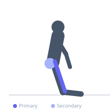

Exercise guide / Couch Stretch
Couch Stretch
The couch stretch is an aggressive hip flexor and quadriceps stretch performed with the rear foot elevated against a wall, couch, or rack, placing the hip into deep extension and the knee into deep flexion simultaneously. This creates maximal lengthening of the iliopsoas, rectus femoris, and other quad muscles and is considered one of the most effective stretches for hip flexor mobility. It is particularly valued for addressing the stiffness that develops from repeated squatting and from prolonged sitting.
Primary muscles
psoas major
iliacus
rectus femoris
Secondary muscles
vastus lateralis
tensor fasciae latae
Stabilizers
transverse abdominis
Equipment
No Equipment (Bodyweight)


Starting position
- Kneel near a wall or couch. Place the rear shin and foot against the wall so the ankle is against the baseboard and the knee is on the floor just in front of the wall.
Setup
- Use a mat under the rear knee. Start close enough to the wall so the shin rests flat against it. Use a couch, wall, or rack upright as the foot support.
Steps
- Step 1: Place the rear shin flat against the wall, knee close to the base of the wall.
- Step 2: Step the front foot forward into a lunge position with front foot flat on the floor.
- Step 3: Squeeze the glute of the rear leg and tuck the pelvis posteriorly — this is the key technique point.
- Step 4: Bring the torso upright as tolerated. The more upright the torso, the more intense the hip flexor stretch.
- Step 5: Hold 60–120 seconds per side.
Coaching cues
- Squeeze the glute of the leg with the foot on the wall
- Tuck the tailbone under — do not arch the lower back
- Breathe through the tension
Breathing
- Breathe deeply and steadily. The sensation should be intense but tolerable.
Range of motion
- Work toward an upright torso with the rear shin fully against the wall. This is a very advanced position for many people.
Tempo
- Hold 60–120 seconds per side. 2–3 rounds.
Common mistakes
- Not squeezing the glute of the rear leg — this is essential for maximizing the iliopsoas stretch
- Anterior pelvic tilt rather than posterior tilt, which decreases the stretch
- Being too far from the wall so the shin angle is insufficient
Safety
- Knee discomfort under the rear knee is common — use padding
- The intensity of this stretch can be very high — start with 20–30 seconds and build tolerance progressively
Training
- mobility: 2–3 reps
- mobility: 1–3 sets
- Rest: {'mobility': 15}